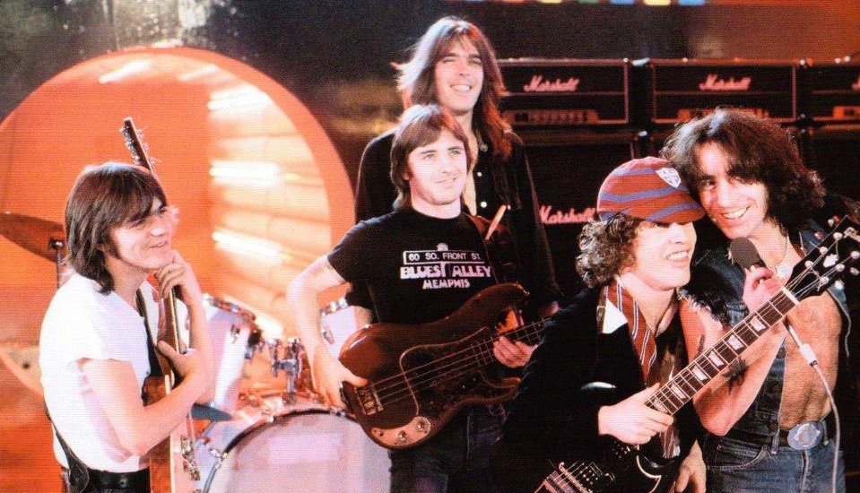
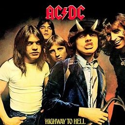
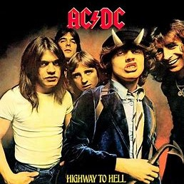

Highway To Hell
The story of AC/DC's 1979 album: A milestone in rock and roll.
This week we take a deep dive into Highway To Hell, AC/DC's 1979 mega hit. This was the last album to feature lead vocalist Bon Scott, before his untimely death in 1980, and includes one of their biggest hits, title track Highway to Hell. It was AC/DC's 6th studio album, and was one of the first to boost the band from national to international successes.
This album featured Bon Scott on vocals, Angus Young on lead guitar, Malcolm Young on rhythm guitar, Cliff Williams on bass guitar, and Phil Rudd on drums. It was recorded at the Roundhouse Studios in London, England, and was produced by Robert 'Mutt' Lange.
Highway To Hell was the fist of AC/DC's albums to be produced by legendary music producrer Mutt Lange. It is noted by band members and other industry members that Mutt Lange committed to refining the bands sound for this album, and is recognised as a large part of their success.
 


Songs like Beating around the Bush is reminiscent of Fleetwood Macs Oh Well, and Night Prowler has a negative association with serial killer Richard Ramirez, who was a fan of the band, and was nicknamed the night stalker. Some of the best songs on the album include the title track Highay To Hell, Get it Hot, and Touch Too Much.
After its release on July 27, 1979, Highway to Hell became the first AC/DC album to enter the US top 100, landing at number 17. Rolling Stone and Classic Rock Magazine have both considered Highway to Hell as one of the greatest hard rock albums ever made, only second to their 1980 album, Back in Black.
| Side One, no. | Track | Duration |
|---|---|---|
| 1 | Highway To Hell | 3:29 |
| 2 | Girls Got Rhythm | 3:24 |
| 3 | Walk alll over you | 5:10 |
| 4 | touch too much | 4:28 |
| 5 | Beating around the bush | 3:57 |
| Side two, no. | Track | Duration |
| 1 | Shot Down in Flames | 3:23 |
| 2 | Get it Hot | 2:35 |
| 3 | If you want love (you got it) | 4:38 |
| 4 | Love Hungry Man | 4:18 |
| 5 | Night Prowler | 6:27 |